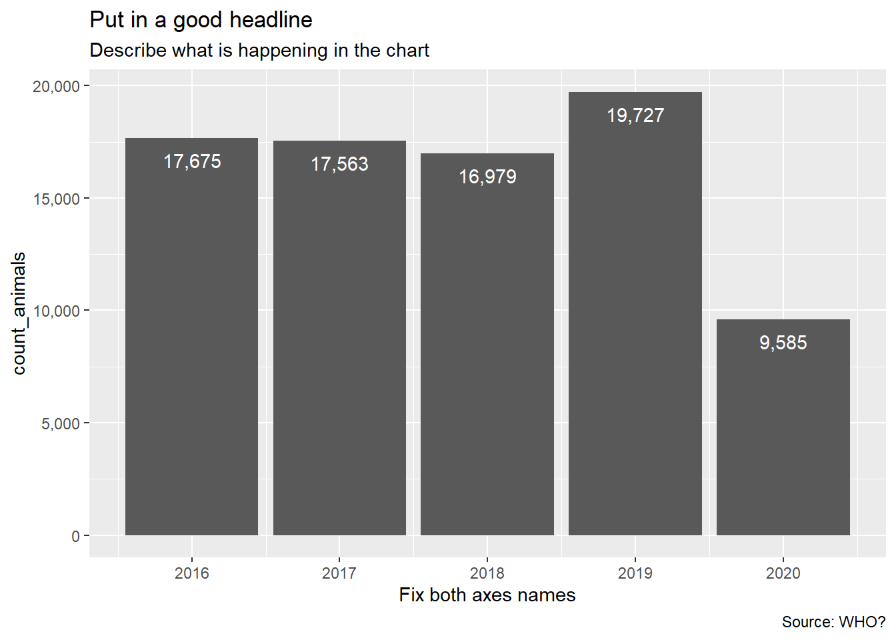
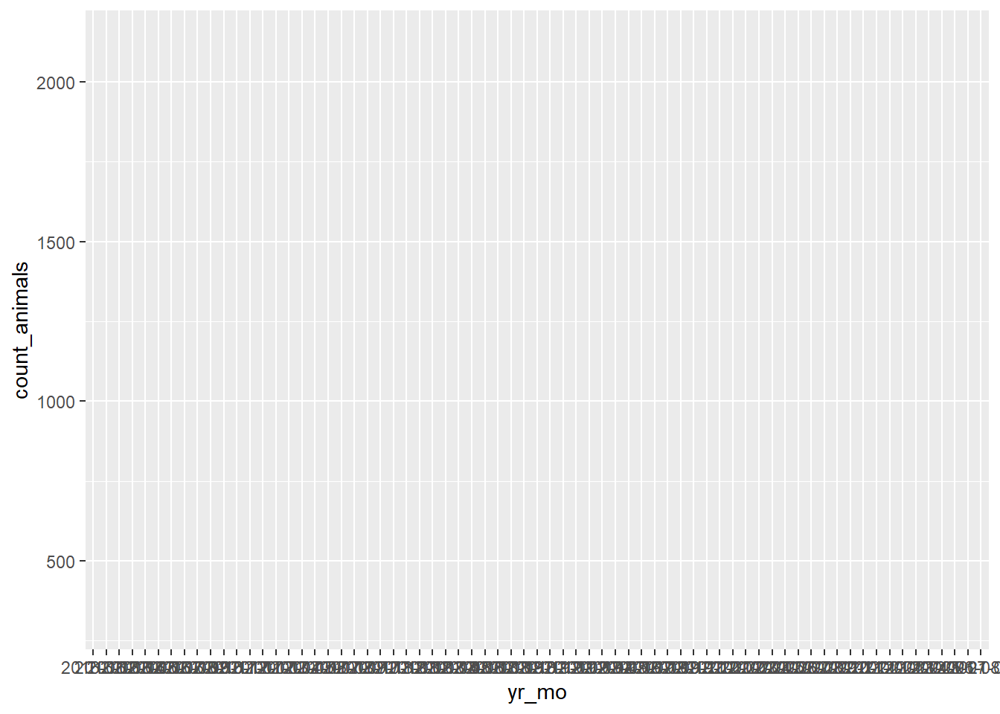
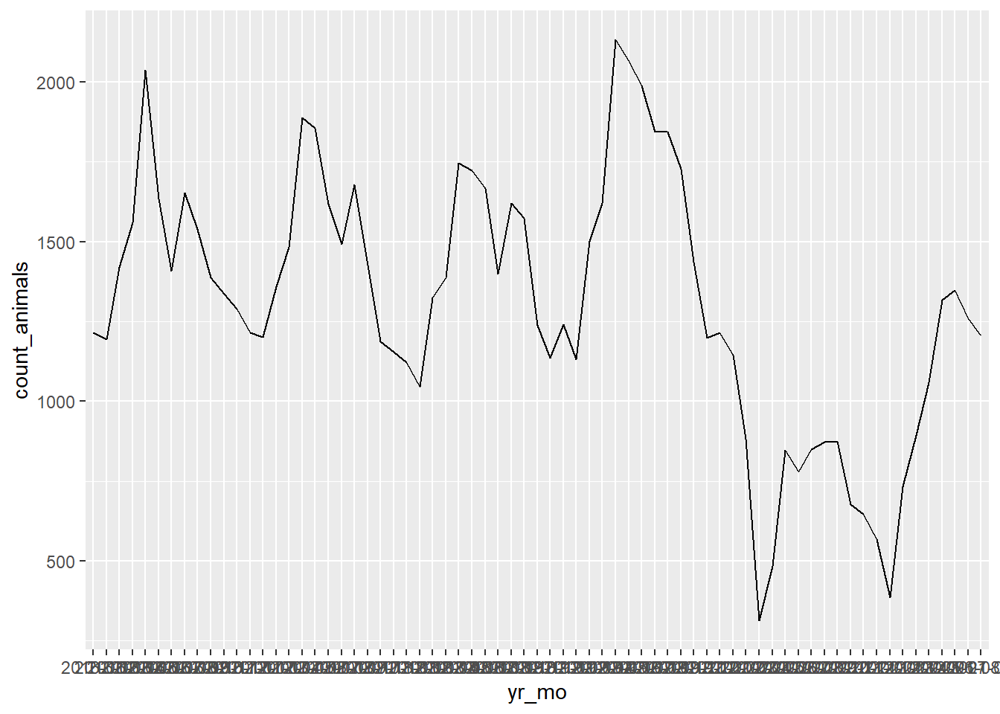
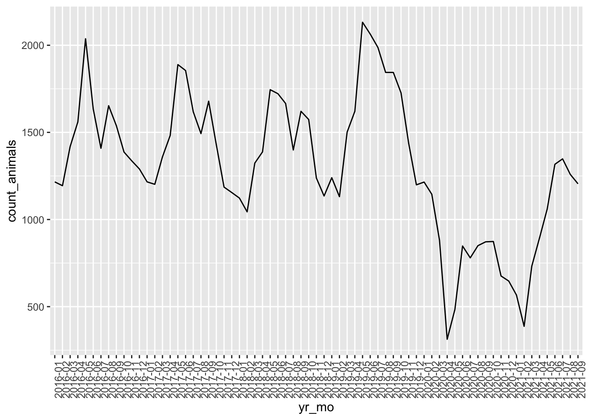
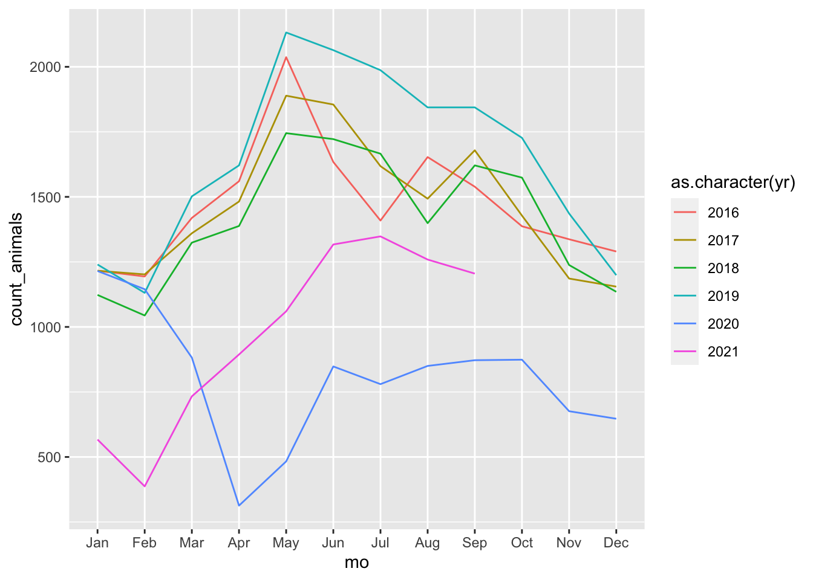
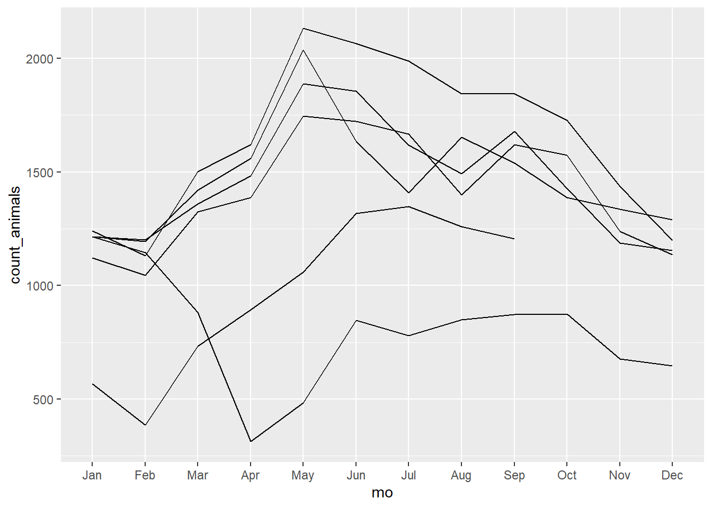
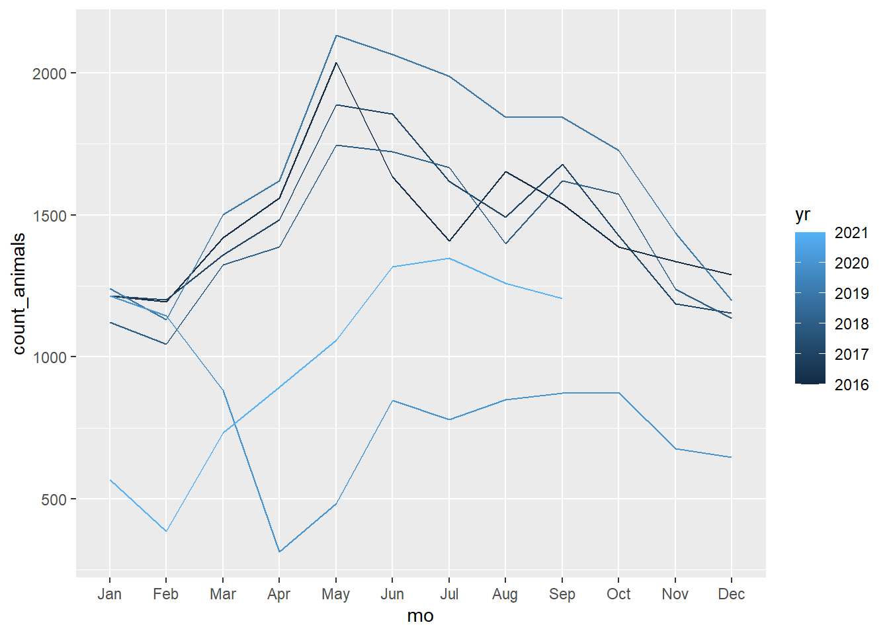
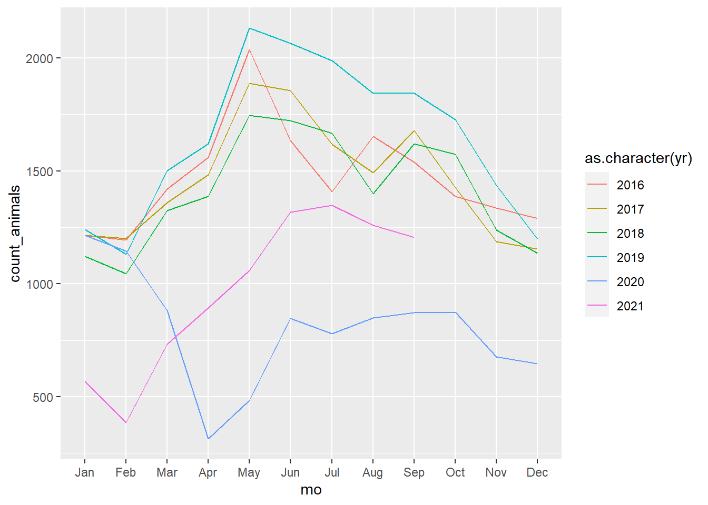

Chapter 10 Plotting for answers
For this chapter, we will use some data from the City of Austin data portal on animal intakes to the Austin Animal Center. You’ll use that portal to download the data, prepare it for R, then answer some questions and make plots to show the answers.
Along the way we’ll learn some stuff.
10.1 Goals of this lesson
- We’ll use some string and date function to clean and parse some dates.
- We’ll use
count()to make some summaries. All of our “answers” are counting operations, so we’ll practice using that shortcut instead of “GSA.” - We’ll learn how to add commas to axis names in ggplot with the scales package.
- We’ll use
recode()to update some values in our data.
10.2 Questions we will answer
We’ll tackle these after we clean our data, but so you know where we are going:
- Are animal intakes increasing or decreasing each year since 2016? Plot a column chart of intakes by year. Don’t include 2021 since it is not a full year.
- Are there seasonal monthly trends in overall animal intakes? Plot intakes by year/month from 2016 to current, including 2021. (One long line or column chart.)
- Plot that same monthly trend, except with month as the x axis, with a new line for each year.
- Do certain types of animals drive seasonal trends? Use five full years of data (not 2021) to summarize intakes by animal type and month. Plot with month on the x axis with a line for each animal type.
10.3 Create your project
We’ll be starting a new R project with our typical folder structure.
- Create a new project. Call it
yourname-aac. - Create your
data-rawanddata-processedfolders. - Create a new R Notebook, title it “AAC Import/clean” and name the file
01-import.Rmd - Add your setup section with the following libraries:
library(tidyverse)
library(janitor)
library(lubridate)As always, create good Markdown sections, descriptions, add notes and name your R chunks so you have good bookmarks to work with.
10.4 Download the data
This time you have to go get your data online and then put the file into your data-raw folder yourself.
- Go to https://data.austintexas.gov/
- Search for “animal intakes.” Find the link “Austin Animal Center Intakes” and click on it. (It may not be the first return, so be careful to get the right one.)
This page tells you about the data at the top. Note that records go back to October 2013. Further down the page there is a list of the “Columns in this Dataset” that kinda describes them, and you can see an example of the data at the bottom. Review those.
- At the top-right of the page is an Export button. Click on that and choose CSV. This will save the file called
Austin_Animal_Center_Intakes.csvto your computer’s Downloads folder. - Find your Downloads folder and the file on your computer, and them move the csv file into your
data-rawfolder in your project folder.
Note that when you source this data in stories or charts, it comes from the Austin Animal Center, not the city’s data portal. The portal is just the delivery method.
10.5 Import your data
Go back into RStudio in your 01-import.Rmd file and import the data. You’ve done this many times now and should be able to do it on your own.
- Don’t forget to create a section with a headline, etc.
- Work one line at a time. Use
read_csv()to find your data and load it onto the screen. - Once that is using, add a
%>%and use theclean_names()function to fix the column names. - Once that is all good, edit the chunk to save the imported data into a new tibble called
raw_data.
You shouldn’t need this.
raw_data <- read_csv("data-raw/Austin_Animal_Center_Intakes.csv") %>% clean_names()
# peek at the data
raw_data## # A tibble: 132,214 × 12
## animal_id name date_time month_year found_location intake_type
## <chr> <chr> <chr> <chr> <chr> <chr>
## 1 A786884 *Brock 01/03/2019 04:19:00 PM 01/03/201… 2501 Magin Me… Stray
## 2 A706918 Belle 07/05/2015 12:59:00 PM 07/05/201… 9409 Bluegras… Stray
## 3 A724273 Runster 04/14/2016 06:43:00 PM 04/14/201… 2818 Palomino… Stray
## 4 A665644 <NA> 10/21/2013 07:59:00 AM 10/21/201… Austin (TX) Stray
## 5 A682524 Rio 06/29/2014 10:38:00 AM 06/29/201… 800 Grove Blv… Stray
## 6 A743852 Odin 02/18/2017 12:46:00 PM 02/18/201… Austin (TX) Owner Surr…
## 7 A635072 Beowulf 04/16/2019 09:53:00 AM 04/16/201… 415 East Mary… Public Ass…
## 8 A708452 Mumble 07/30/2015 02:37:00 PM 07/30/201… Austin (TX) Public Ass…
## 9 A818975 <NA> 06/18/2020 02:53:00 PM 06/18/202… Braker Lane A… Stray
## 10 A774147 <NA> 06/11/2018 07:45:00 AM 06/11/201… 6600 Elm Cree… Stray
## # … with 132,204 more rows, and 6 more variables: intake_condition <chr>,
## # animal_type <chr>, sex_upon_intake <chr>, age_upon_intake <chr>,
## # breed <chr>, color <chr>10.6 Fix the dates
Take a look at the date_time and month_year columns. They are both timestamps that include both the date and time. They imported as a character datatype <chr> and are in this format:
01/03/2019 04:19:00 PMWe won’t be using the time for this exercise, so all we really need is the date. Lubridate doesn’t have a conversion for this exact format (at least that I could find.) That’s ok, we’ll use some stringr functions to whip this into shape.
We can use a function called str_sub() to pluck out the date from this string. We’ll create a new column using mutate() to do this. You’ve used mutate before.
str_sub() allows you to pluck any number of characters out of a string. We want the first 10 characters: “01/03/2019.”
It takes three arguments:
- The column you are looking at? For us, this is the
date_timecolumn. - What position do you want to start at? For us, we start at “1,” the first character.
- How many characters do you want? For us, we want “10.”
We use this inside a mutate() function to create a new column with the results of the str_sub() function.
- Create a new section and note we are fixing the date.
- Create a chunk, call your
raw_dataand pipe that into amutate()function. - Inside your mutate, name your new column
intake_date. - Set
intake_dateto=tostr_sub(date_time, 1, 10).
Try it, and then check the last column of the data that comes back to make sure you actually have a 10-character string like “01/03/2019.”
Part of the answer
raw_data %>%
mutate(
intake_date = str_sub(date_time, 1, 10)
)## # A tibble: 132,214 × 13
## animal_id name date_time month_year found_location intake_type
## <chr> <chr> <chr> <chr> <chr> <chr>
## 1 A786884 *Brock 01/03/2019 04:19:00 PM 01/03/201… 2501 Magin Me… Stray
## 2 A706918 Belle 07/05/2015 12:59:00 PM 07/05/201… 9409 Bluegras… Stray
## 3 A724273 Runster 04/14/2016 06:43:00 PM 04/14/201… 2818 Palomino… Stray
## 4 A665644 <NA> 10/21/2013 07:59:00 AM 10/21/201… Austin (TX) Stray
## 5 A682524 Rio 06/29/2014 10:38:00 AM 06/29/201… 800 Grove Blv… Stray
## 6 A743852 Odin 02/18/2017 12:46:00 PM 02/18/201… Austin (TX) Owner Surr…
## 7 A635072 Beowulf 04/16/2019 09:53:00 AM 04/16/201… 415 East Mary… Public Ass…
## 8 A708452 Mumble 07/30/2015 02:37:00 PM 07/30/201… Austin (TX) Public Ass…
## 9 A818975 <NA> 06/18/2020 02:53:00 PM 06/18/202… Braker Lane A… Stray
## 10 A774147 <NA> 06/11/2018 07:45:00 AM 06/11/201… 6600 Elm Cree… Stray
## # … with 132,204 more rows, and 7 more variables: intake_condition <chr>,
## # animal_type <chr>, sex_upon_intake <chr>, age_upon_intake <chr>,
## # breed <chr>, color <chr>, intake_date <chr>10.6.1 Edit to convert to a real date
If you did the above correctly, you should have a column called intake_date as the last column, but it isn’t actually a date yet, it is just characters that look like a date. We’ll fix that now.
- Edit your date-fix chunk to add another rule INSIDE your mutate.
- The new column will still be
intake_date =but now you’ll set that tomdy(intake_date) - Run the chunk and make sure that your same last column
intake_datesays<date>right below the name. The order should now be2019-01-03. - Now that this all works, assign all this using
<-into a tibble calleddate_fix. - Add a
glimpse()of the date_fix tibble in the same chunk so you can eyeball the results.
this was simlar to converting the date in billboard
date_fix <- raw_data %>%
mutate(
intake_date = str_sub(date_time, 1, 10),
intake_date = mdy(intake_date)
)
date_fix %>% glimpse()## Rows: 132,214
## Columns: 13
## $ animal_id <chr> "A786884", "A706918", "A724273", "A665644", "A682524"…
## $ name <chr> "*Brock", "Belle", "Runster", NA, "Rio", "Odin", "Beo…
## $ date_time <chr> "01/03/2019 04:19:00 PM", "07/05/2015 12:59:00 PM", "…
## $ month_year <chr> "01/03/2019 04:19:00 PM", "07/05/2015 12:59:00 PM", "…
## $ found_location <chr> "2501 Magin Meadow Dr in Austin (TX)", "9409 Bluegras…
## $ intake_type <chr> "Stray", "Stray", "Stray", "Stray", "Stray", "Owner S…
## $ intake_condition <chr> "Normal", "Normal", "Normal", "Sick", "Normal", "Norm…
## $ animal_type <chr> "Dog", "Dog", "Dog", "Cat", "Dog", "Dog", "Dog", "Dog…
## $ sex_upon_intake <chr> "Neutered Male", "Spayed Female", "Intact Male", "Int…
## $ age_upon_intake <chr> "2 years", "8 years", "11 months", "4 weeks", "4 year…
## $ breed <chr> "Beagle Mix", "English Springer Spaniel", "Basenji Mi…
## $ color <chr> "Tricolor", "White/Liver", "Sable/White", "Calico", "…
## $ intake_date <date> 2019-01-03, 2015-07-05, 2016-04-14, 2013-10-21, 2014…Now that you can see the date_time and intake_date columns at once, check to make sure they converted correctly and you don’t have any problems. Doublecheck the datatype for intake_date, which should be <date>.
10.7 Parse the date into helpful variables
Now that we have a good date to work with, we can use other lubridate functions to create some versions of the date that will help us down the road when we do summaries and plots.
TBH, just diving into the data at this point you might not know you need these date parts yet until you try to create summaries and plots. If you find later that you need helpful columns like this, you can always come back to your import notebook, create and re-run it to get updated data. In the interest of time I’m front-loading the need based on experience.
We are going to create three variations of the date to help us later:
- A
yrcolumn with just the year, like2019. - A
mocolumn with the month, but using the name, likeJan. - A
yrmocolumn like2019-01
We’ll do this in the same mutate() function, but we’ll use different methods to do each one, which is a useful learning experience. We’ll also use select() to reorder our columns to put these all at front of the tibble so we can see them.
We’ll work through this out in the open so I can explain as we go along.
10.7.1 Extract the year
We can use year() from lubridate to pluck the YYYY value from intake_date. We’ll use this to build our mutate.
- Create a new section and note we are creating helpful date parts.
- Add the following chunk so we can get started.
date_parts <- date_fix %>%
mutate(
yr = year(intake_date) # creates yr and fills it with YYYY
)
# peek
date_parts %>% glimpse()## Rows: 132,214
## Columns: 14
## $ animal_id <chr> "A786884", "A706918", "A724273", "A665644", "A682524"…
## $ name <chr> "*Brock", "Belle", "Runster", NA, "Rio", "Odin", "Beo…
## $ date_time <chr> "01/03/2019 04:19:00 PM", "07/05/2015 12:59:00 PM", "…
## $ month_year <chr> "01/03/2019 04:19:00 PM", "07/05/2015 12:59:00 PM", "…
## $ found_location <chr> "2501 Magin Meadow Dr in Austin (TX)", "9409 Bluegras…
## $ intake_type <chr> "Stray", "Stray", "Stray", "Stray", "Stray", "Owner S…
## $ intake_condition <chr> "Normal", "Normal", "Normal", "Sick", "Normal", "Norm…
## $ animal_type <chr> "Dog", "Dog", "Dog", "Cat", "Dog", "Dog", "Dog", "Dog…
## $ sex_upon_intake <chr> "Neutered Male", "Spayed Female", "Intact Male", "Int…
## $ age_upon_intake <chr> "2 years", "8 years", "11 months", "4 weeks", "4 year…
## $ breed <chr> "Beagle Mix", "English Springer Spaniel", "Basenji Mi…
## $ color <chr> "Tricolor", "White/Liver", "Sable/White", "Calico", "…
## $ intake_date <date> 2019-01-03, 2015-07-05, 2016-04-14, 2013-10-21, 2014…
## $ yr <dbl> 2019, 2015, 2016, 2013, 2014, 2017, 2019, 2015, 2020,…Look how I set up this chunk to work with it. I know that I’m going to be adding columns and checking values and it is a pain click to the end of the tibble each time to see the results. So what I’ve done is set this up to go into a new tibble called date_parts and then I glimpse that at the end so I can peek at the results. This allows me to look at the first couple of values in the glimpse to make sure I’ve done the work right. I’ll still be working one line at a time as I edit the chunk further, but at least I can see what I’m doing.
Now, note we have a new column yr at that starts with “2019,” which matches what is in intake_date (and even date_time). This is good.
Can you see how our mutate created the new yr column?
- We name the new column
yr - We fill that column with
year(intake_date), which plucks the year from that column.
10.7.2 Extract the month name
We’ll edit the same chunk to do a similar action to get the name of the month in a new column. You’ll see in a minute how we can choose to get the name of the month instead of the number.
- Edit your chunk to add a new line to the mutate function. Don’t forget the comma after the existing rule.
- Add the new line as indicated below, then run it to see the results.
date_parts <- date_fix %>%
mutate(
yr = year(intake_date), # don't forget the comma
mo = month(intake_date) # the new mutate rule to get month
)
# peek
date_parts %>% glimpse()## Rows: 132,214
## Columns: 15
## $ animal_id <chr> "A786884", "A706918", "A724273", "A665644", "A682524"…
## $ name <chr> "*Brock", "Belle", "Runster", NA, "Rio", "Odin", "Beo…
## $ date_time <chr> "01/03/2019 04:19:00 PM", "07/05/2015 12:59:00 PM", "…
## $ month_year <chr> "01/03/2019 04:19:00 PM", "07/05/2015 12:59:00 PM", "…
## $ found_location <chr> "2501 Magin Meadow Dr in Austin (TX)", "9409 Bluegras…
## $ intake_type <chr> "Stray", "Stray", "Stray", "Stray", "Stray", "Owner S…
## $ intake_condition <chr> "Normal", "Normal", "Normal", "Sick", "Normal", "Norm…
## $ animal_type <chr> "Dog", "Dog", "Dog", "Cat", "Dog", "Dog", "Dog", "Dog…
## $ sex_upon_intake <chr> "Neutered Male", "Spayed Female", "Intact Male", "Int…
## $ age_upon_intake <chr> "2 years", "8 years", "11 months", "4 weeks", "4 year…
## $ breed <chr> "Beagle Mix", "English Springer Spaniel", "Basenji Mi…
## $ color <chr> "Tricolor", "White/Liver", "Sable/White", "Calico", "…
## $ intake_date <date> 2019-01-03, 2015-07-05, 2016-04-14, 2013-10-21, 2014…
## $ yr <dbl> 2019, 2015, 2016, 2013, 2014, 2017, 2019, 2015, 2020,…
## $ mo <dbl> 1, 7, 4, 10, 6, 2, 4, 7, 6, 6, 8, 10, 7, 2, 3, 2, 11,…What we get in return here is the number of the month: A “1” for January; a “7” for July, etc. What we really want is the names of the month to help us with plotting later.
- Edit the mutate to add
, label = TRUEwithin themonth().
date_parts <- date_fix %>%
mutate(
yr = year(intake_date),
mo = month(intake_date, label = TRUE) # add the label argument
)
# peek
date_parts %>% glimpse()## Rows: 132,214
## Columns: 15
## $ animal_id <chr> "A786884", "A706918", "A724273", "A665644", "A682524"…
## $ name <chr> "*Brock", "Belle", "Runster", NA, "Rio", "Odin", "Beo…
## $ date_time <chr> "01/03/2019 04:19:00 PM", "07/05/2015 12:59:00 PM", "…
## $ month_year <chr> "01/03/2019 04:19:00 PM", "07/05/2015 12:59:00 PM", "…
## $ found_location <chr> "2501 Magin Meadow Dr in Austin (TX)", "9409 Bluegras…
## $ intake_type <chr> "Stray", "Stray", "Stray", "Stray", "Stray", "Owner S…
## $ intake_condition <chr> "Normal", "Normal", "Normal", "Sick", "Normal", "Norm…
## $ animal_type <chr> "Dog", "Dog", "Dog", "Cat", "Dog", "Dog", "Dog", "Dog…
## $ sex_upon_intake <chr> "Neutered Male", "Spayed Female", "Intact Male", "Int…
## $ age_upon_intake <chr> "2 years", "8 years", "11 months", "4 weeks", "4 year…
## $ breed <chr> "Beagle Mix", "English Springer Spaniel", "Basenji Mi…
## $ color <chr> "Tricolor", "White/Liver", "Sable/White", "Calico", "…
## $ intake_date <date> 2019-01-03, 2015-07-05, 2016-04-14, 2013-10-21, 2014…
## $ yr <dbl> 2019, 2015, 2016, 2013, 2014, 2017, 2019, 2015, 2020,…
## $ mo <ord> Jan, Jul, Apr, Oct, Jun, Feb, Apr, Jul, Jun, Jun, Aug…How did I know to do that? I Googled get month name in lubridate. The first result took me to a lubridate.tidyverse.org page that explained how to do it. TBH, I was lucky to find the answer in the first result, but I do usually try official tidyverse pages first. I’m also used to reading their documentation.
You’ll see there the default label for months is to abbreviate the month. If you wanted the long names you would also add and argument abbr = FALSE. You still need the label argument, too. We’ll stick with the short names.
10.7.3 Extract YYYY-MM format
For our next challenge, we want to create a yr_mo column that has both the year and month of our date in YYYY-MM format.
TBH (I have a lot of those today), we could use str_sub() to do this, but then I wouldn’t get to show you how to format dates in different ways.
For this one, I think we’ll add the line first and then I’ll explain it afterward.
- Edit your mutate function to add yet another rule (don’t forget the comma!)
- Add the rule below, run it, then read about it below.
- Check out the last row of your glimpse to make sure the column was created and in YYYY-MM format.
date_parts <- date_fix %>%
mutate(
yr = year(intake_date),
mo = month(intake_date, label = TRUE),
yr_mo = format(intake_date, "%Y-%m") # new rule to make YYYY-MM
)
# peek
date_parts %>% glimpse()## Rows: 132,214
## Columns: 16
## $ animal_id <chr> "A786884", "A706918", "A724273", "A665644", "A682524"…
## $ name <chr> "*Brock", "Belle", "Runster", NA, "Rio", "Odin", "Beo…
## $ date_time <chr> "01/03/2019 04:19:00 PM", "07/05/2015 12:59:00 PM", "…
## $ month_year <chr> "01/03/2019 04:19:00 PM", "07/05/2015 12:59:00 PM", "…
## $ found_location <chr> "2501 Magin Meadow Dr in Austin (TX)", "9409 Bluegras…
## $ intake_type <chr> "Stray", "Stray", "Stray", "Stray", "Stray", "Owner S…
## $ intake_condition <chr> "Normal", "Normal", "Normal", "Sick", "Normal", "Norm…
## $ animal_type <chr> "Dog", "Dog", "Dog", "Cat", "Dog", "Dog", "Dog", "Dog…
## $ sex_upon_intake <chr> "Neutered Male", "Spayed Female", "Intact Male", "Int…
## $ age_upon_intake <chr> "2 years", "8 years", "11 months", "4 weeks", "4 year…
## $ breed <chr> "Beagle Mix", "English Springer Spaniel", "Basenji Mi…
## $ color <chr> "Tricolor", "White/Liver", "Sable/White", "Calico", "…
## $ intake_date <date> 2019-01-03, 2015-07-05, 2016-04-14, 2013-10-21, 2014…
## $ yr <dbl> 2019, 2015, 2016, 2013, 2014, 2017, 2019, 2015, 2020,…
## $ mo <ord> Jan, Jul, Apr, Oct, Jun, Feb, Apr, Jul, Jun, Jun, Aug…
## $ yr_mo <chr> "2019-01", "2015-07", "2016-04", "2013-10", "2014-06"…OK, for this mutate we used the format() function, which takes two arguments:
- The column we are pulling from:
intake_datein our case. - The format that we want that date in:
"%Y-%m".
How did I know to do that? I Googled it. Sound familiar? I don’t remember exactly the terms, but I found this page that gave me enough to figure it out. I didn’t need the as.Date() part because I was already working with a date column.
The funky %Y or whatever is really just a code. The link above has a list of the common ones you might use, though there are many more. Here are those common formats:
| Symbol | Meaning | Example |
|---|---|---|
| %d | day as a number (01-31) | 01-31 |
| %a | abbreviated weekday | Mon |
| %A | full weekday | Monday |
| %m | month (01-12) | 01-12 |
| %b | abbreviated month | Jan |
| %B | full month | January |
| %y | 2-digit year | 07 |
| %Y | 4-digit year | 2007 |
10.7.4 Reorder and drop columns
OK, we have a mess of date columns all over our data now. We are done creating new ones, so let’s reorganize our data to put the date columns we want at the beginning and drop some we don’t need anymore.
- Edit your chunk to pipe the equation we’ve been working into a
select()statement. - Add that as indicated below. I’ll explain after.
date_parts <- date_fix %>%
mutate(
yr = year(intake_date),
mo = month(intake_date, label = TRUE),
yr_mo = format(intake_date, "%Y-%m") # new rule to make YYYY-MM
) %>%
select(intake_date, yr, mo, yr_mo, everything(), -date_time, -month_year)
# peek
date_parts %>% glimpse()## Rows: 132,214
## Columns: 14
## $ intake_date <date> 2019-01-03, 2015-07-05, 2016-04-14, 2013-10-21, 2014…
## $ yr <dbl> 2019, 2015, 2016, 2013, 2014, 2017, 2019, 2015, 2020,…
## $ mo <ord> Jan, Jul, Apr, Oct, Jun, Feb, Apr, Jul, Jun, Jun, Aug…
## $ yr_mo <chr> "2019-01", "2015-07", "2016-04", "2013-10", "2014-06"…
## $ animal_id <chr> "A786884", "A706918", "A724273", "A665644", "A682524"…
## $ name <chr> "*Brock", "Belle", "Runster", NA, "Rio", "Odin", "Beo…
## $ found_location <chr> "2501 Magin Meadow Dr in Austin (TX)", "9409 Bluegras…
## $ intake_type <chr> "Stray", "Stray", "Stray", "Stray", "Stray", "Owner S…
## $ intake_condition <chr> "Normal", "Normal", "Normal", "Sick", "Normal", "Norm…
## $ animal_type <chr> "Dog", "Dog", "Dog", "Cat", "Dog", "Dog", "Dog", "Dog…
## $ sex_upon_intake <chr> "Neutered Male", "Spayed Female", "Intact Male", "Int…
## $ age_upon_intake <chr> "2 years", "8 years", "11 months", "4 weeks", "4 year…
## $ breed <chr> "Beagle Mix", "English Springer Spaniel", "Basenji Mi…
## $ color <chr> "Tricolor", "White/Liver", "Sable/White", "Calico", "…Alright, that is a helluva a select statement. The only new thing there is everything(), which selects (you guessed it) everything not already named. The selects come in order, so it works like this:
- select the intake_date, yr, mo, yr_mo
- select everything else
- remove date_time and month_year, which we don’t need anymore
10.8 On your own: Filter dates
You’ve filtered data by date several times before, so you can do this on your own. It will affect all your work later, so you’ll want to check your work. Here are the directions and some hints:
- Our data goes back in time to 2013. We only want years 2016 and newer. Filter out the older data.
- We don’t want the partial month of October 2021 as it is not a full month. Filter out that data.
- Save your filtered data into a new tibble.
- Check your data to make sure it is right using
summary()
10.9 On your own: Export your data
We’re separating the import/cleaning from the rest of our analysis so we don’t have to rerun that code all the time. We did the same with Billboard and Military Surplus assignments.
As such, you can handle this one on your own as well, with this guidance:
- Export your data as an
.rdsfile into yourdata-processedfolder. - Name the file starting with
01-so you can tell later where it came from. The rest of the name is up to you, but make sure it is in the right place and remember the name so you can open it in the next notebook.
10.10 Set up your analysis notebook
- Set up a new notebook and call it
02-analysis.Rmd - Create a setup section and load the following libraries:
library(tidyverse)
library(lubridate)
library(scales)
library(plotly)
library(clipr)You might have to use install.packages() for the “scales” library, I’m not sure. You should have clipr from the last chapter.
For the love of your favorite deity (or none at all), please please please remember to run your libraries each time you open your notebook to work on it. That tripped up several folks over the past couple of weeks. Restart R and Run All Chunks is your friend.
10.11 On your own: Import your cleaned data
- Yep, set up a new section
- Import your data from the last notebook. You should be using
read_rds() - Save the imported data into a tibble called
intakesso we are all on the same page.
10.12 Question 1: Intakes by year
Our question is: Are animal intakes increasing or decreasing each year since 2016? Plot a column chart of intakes by year. Don’t include 2021 since it is not a full year.
Remember that we break these plots into two parts:
- Summarize your data
- Plot your data
While I have not problem with you using group_by/summarize/arrange for this, this assignment is all about counting rows, so I think it is worth revisiting the count() function. Take a quick review of the count function from Bilboard.
With that in mind, write a summary that counts the number of rows for each year. Remember we have the yr column we created earlier.
- Create a new section about “Intakes by year.”
- Build a summarize table that counts rows by year. Name your counted column
count_animals. - Filter out any results from 2021 since that is not a full year.
- Save the result into a tibble called
intakes_yr_data.
Don’t overthink it
intakes_yr_data <- intakes %>%
count(yr, name = "count_animals") %>%
filter(yr < 2021)
# peek at it
intakes_yr_data## # A tibble: 5 × 2
## yr count_animals
## <dbl> <int>
## 1 2016 17675
## 2 2017 17563
## 3 2018 16979
## 4 2019 19727
## 5 2020 958510.12.1 On your own: Column chart of intakes by year
You’ve built column charts before for princesses and ice cream. No need to flip the coordinates on this one. Here I want you to build a column chart based on the data you just made, and I want you to make it as complete as possible.
- Plot a
geom_colchart usingyron the x axis andcount_animalson the y axis. - Include labs for title, subtitle, caption and good axis names
- Again, no need to flip the axis. Year can stay along the bottom.

Once you’ve built the chart, what does it tell you? I’m sure you can guess what happened in 2020, but to be sure you would want to do some reporting and talk to the animal center to learn how they dealt with the pandemic.
10.12.2 Getting commas on numbers
One thing you might notice different about my example chart is I have commas in the values on the Y axis and within the text labels. It’s a common need and there is a solution, and why we’ve installed and loaded the “scales” library:
- Add the following as a new layer on your chart, but don’t forget the
+on the line above:scale_y_continuous(labels = comma) - Run that and make sure it works.
For the numbers as labels, in your geom_text() layer you can wrap your aes(labels = count_animals) in a comma() function.
- In your geom_text() layer, edit the aes to this:
label = comma(count_animals).
10.13 Question 2: Intakes by month
Are there seasonal monthly trends in overall animal intakes? Plot intakes by month from 2016 to current, including 2021. (One long line or a column chart.)
To find this answer we’ll plot as a single line chart and along the way we’ll learn how to rotate our x axis labels.
10.13.1 Intakes by month as a line
We need our data first. To show every month on one chart we have to know how many animals were brought in by both year and month. This is why we created the yr_mo column earlier. This time we can keep the data from 2021.
- Create a new section noting you are plotting by month as a line.
- Use
count()to summarize the data by theyr_mocolumn. Name your new columncount_animals. - Assign the result to a new oblject using
<-namedintakes_yrmoso we are on the same page.
I’m too nice
intakes_yrmo <- intakes %>%
count(yr_mo, name = "count_animals")
# peek
intakes_yrmo## # A tibble: 69 × 2
## yr_mo count_animals
## <chr> <int>
## 1 2016-01 1216
## 2 2016-02 1194
## 3 2016-03 1419
## 4 2016-04 1560
## 5 2016-05 2037
## 6 2016-06 1634
## 7 2016-07 1409
## 8 2016-08 1653
## 9 2016-09 1539
## 10 2016-10 1387
## # … with 59 more rowsNow that you have the data, we’ll try to plot this as a line. You might end up with this error:
“geom_path: Each group consists of only one observation. Do you need to adjust the group aesthetic?”
intakes_yrmo %>%
ggplot(aes(x = yr_mo, y = count_animals)) +
geom_line()## geom_path: Each group consists of only one observation. Do you need to adjust
## the group aesthetic?
The geom_line() function expects you to have more than one line to plot, and when we don’t have that (and often when we do) we have to specify the “group” or value to split the lines. When we have only one line we need to specify that:
- Edit your
geom_line()function to addgroup = 1inside it.
intakes_yrmo %>%
ggplot(aes(x = yr_mo, y = count_animals)) +
geom_line(group = 1) # group added here
OK, but we can’t read the X axis names, and it wouldn’t make sense to flip the whole line chart, so intead we’ll flip the axis names. Remember that we can change just about anything in the theme, right?
- Add the layer noted below to your plot. Don’t forget the
+on the previous line.
intakes_yrmo %>%
ggplot(aes(x = yr_mo, y = count_animals)) +
geom_line(group = 1) +
theme(axis.text.x = element_text(angle = 90)) # flips the axis name
You can change the number there to get different angles, like 45 degrees.
How the heck did I know that? Can you guess? Yes, Google is your friend, searching for something like “rotate axis names in ggplot.” To be honest, in this case I used a different method: I phoned a friend for help and Jo Lukito found this. She should’ve chided me with Let me Google that for you.
She also helped me with the next challenge.
10.13.2 Make the chart wider
Our chart is still too squished to read. For this one, the answer is in the R chunk settings so I can’t show you in code with this book.
- In your R chunk where you name the chunk like this:
{r chunk-name}, edit it to say{r chunk-name, fig.width = 7}and then run it. Hopefully you have a more descriptive name chunk than chunk-name, though.
Unfortunately that change doesn’t really show in this published book but it does help you in your own R Notebook.
10.13.3 So, what of this
We could plot this same data as a geom_col() but it would have the same issues. That said, we’ve proven two things here:
- There is definitely a seasonal trend to animal intakes. There seem to be surges each spring and early summer, between March and June,
- We’ve also proved this is a crappy way to see that. Let’s find another way.
No need to clean up that line chart beyond what we’ve done, but keep it in your notebook.
10.14 Question 3: Intakes by month, split by year
Plot that same monthly trend, except with month as the x axis, with a new line for each year.
Let’s visualize success so we know what we are going after. This is the basic plot before being cleaned up.

Here we can see each year by month all on the same scale and see that the lowest year by far was 2020, and 2021 is trending back up but doesn’t yet reach the level of previous years.
- To make this chart you need the
mocolumn that we created earlier so we can plot our months across the X axis. The brilliant thing we did was build that month from a real date so it retains its factor order of Jan, Feb, etc., instead of being alphabetical. - But we also need the
yrcolumn so we can set the group and color of the lines by that year. So well be grouping by two values. - We’ll be counting rows as we have been and name them
count_animals.
We’ll do this one together, but you’ll have to build a similar chart in a bit so pay attention.
10.14.1 Prepare the data with mo and yr
- Start a new section that you are plotting intakes by month, split by year
- Add the R chunk below
mo_yr_data <- intakes %>%
count(mo, yr, name = "count_animals")
# peek
mo_yr_data## # A tibble: 69 × 3
## mo yr count_animals
## <ord> <dbl> <int>
## 1 Jan 2016 1216
## 2 Jan 2017 1216
## 3 Jan 2018 1123
## 4 Jan 2019 1240
## 5 Jan 2020 1215
## 6 Jan 2021 567
## 7 Feb 2016 1194
## 8 Feb 2017 1202
## 9 Feb 2018 1044
## 10 Feb 2019 1131
## # … with 59 more rows10.14.2 Plot by month, split by year
So we have this month name mo to plot along the X axis and the count_animals to plot along the Y axis. We have yr_mo to group our lines.
- Note that you are plotting now
- Add the base chart as noted below.
mo_yr_data %>%
ggplot(aes(x = mo, y = count_animals)) + # sets our x,y
geom_line(aes(group = yr)) # separates the lines
We are getting somewhere. We can see each year on the plot, but we can’t tell them apart.
- Inside the
aes()forgeom_line(), addcolor = yr.
mo_yr_data %>%
ggplot(aes(x = mo, y = count_animals)) + # sets our x,y
geom_line(aes(group = yr, color = yr)) # adds color to lines based on yr
Well, that is an interesting color choice for our years. Ggplot is using the yr value as a continuous number, and indeed if we look back up at our data we can see the column datatype is <dbl> which means it is a number. That happened way back when we created the yr column.
What to do? We could go back to the import/clean notebook and adjust that to make it a character datatype. Or we could go to our data prep step and mutate that column there. Or we could just fix it in the chart.
We’ll just fix it in the chart.
10.14.3 Adjust the yr value to a character
- In your plot code, find the
color = yrpart and change it tocolor = as.character(yr)
mo_yr_data %>%
ggplot(aes(x = mo, y = count_animals)) +
geom_line(aes(group = yr, color = as.character(yr))) # color = yr updated
What we’ve done is used the as.character() function to change the yr value from a number to text. Now ggplot thinks it is a category instead of a continuous number. If this came up again, we might go back to the import notebook and fix it, but this works for now.
But do note that also changed the label for our legend. We needed to fix that anyway and we can do that with labs() the same way we edit our x and y axes labels. Just use color = "Year" or whatever you want call it.
10.14.4 Clean up your intakes by month, split by year chart
- Edit your plot code to do the following:
- Add a title and subtitle
- Add the source of our data in the caption
- Clean up your axis and color names
10.15 Question 4: Animal types by month
Do certain types of animals drive seasonal trends? Use five full years of data (not 2021) to summarize intakes by animal type and month. Plot with month on the x axis with a line for each animal type.
To envision success, just look at the chart you just made. Instead of having a line for each year, we want a line for each animal type.
Before we get there, let’s take a look at those animal types.
10.15.1 Recode animal types
- Create a section that you are plotting animal types by month
- Create a quick
count()on the columnanimal_type. I’ll wait.
You need to do the code in your notebook, but here is the output:
## # A tibble: 5 × 2
## animal_type n
## <chr> <int>
## 1 Bird 513
## 2 Cat 34242
## 3 Dog 50662
## 4 Livestock 18
## 5 Other 4864Note that there are way more Dogs and Cats than other animal types. We will create a new tibble that renames each row with Bird or Livestock as Other so they will all be in the same category.
We do this with recode() within a mutate(). You can read about recode here. If you read that you’ll notice there is a weird thing in that it bucks the R trend of naming new things first and then filling them. Recode names the old thing first and then defines the new name. Oh, well. It’s what we got.
Our recode will happen inside a mutate() function but let’s talk about recode() first.
- The first argument is the column you are recoding:
recode(animal_type) - Next we give it a list of the values we want to change, then set it equal to the value we want it to be:
recode(animal_type, "Old Value" = "New Value"). We can stack the changes inside recode.
- Write a markdown note that you are going to recode
animal_type. - Add the code block below, run it, then read the explanation.
intake_types <- intakes %>%
filter(yr < 2021) %>% # removes 2021 because its partial yr
mutate(
animal_type = recode(animal_type, # first arg is the column to look at
"Bird" = "Other", # old name, then new name
"Livestock" = "Other" # old name, then new name
)
)
intake_types %>%
count(animal_type)## # A tibble: 3 × 2
## animal_type n
## <chr> <int>
## 1 Cat 30474
## 2 Dog 46222
## 3 Other 4833Let’s break this down:
- At the top We started with our data and assigned it to a new tibble. We don’t want to change the original data.
- We start a mutate. We set it to change the original
animal_typecolumn with our recoded values. - Within the
recode()function we say with column we are chaning (animal_type) and then we note the old and new values, each in quotes. - At the bottom we take the new tibble and pipe it into a
count(animal_type)so we can check the results. Note that the changed data is still row-level data for each animal. We just piped that result intocount()so we could check the recode changes. We didn’t “save” that last count.
Like I did with the date parts earlier, when I built this I went ahead and started by assigning the original data to a new tibble and then printing that new tibble before I worked on the rest line-by-line.
Recode is a valuable method to clean data, but you have to be careful that you aren’t overwritting your original data. I was comfortable doing so because we could easily eyeball the results to ake sure they were right, and we were saving the result into a new tibble anyway, so the original data is safe in intakes.
10.15.2 On your own: Count animal types by month
Now it is time for you to prep this data for our plot. Here is the logic: You are counting the rows by both the month mo and the animal_type. Remember to start with the 1intake_types` tibble you just created.
- Write notes that you are creating the animal type summary by month
- Write code that counts the rows based on month and animal type. Name your new column something that makes sense.
You should end up with a summary with three columns: mo, animal_type and whatever you named the count column.
10.15.3 On your own: Plot animal types by month
Remember this is very similar to your plot above where you made a line chart of counts split by year, but this time you are splitting by animal_type.
- Write notes that you are plotting
- Build the plot and include all the labs: title, subtitle, caption and fix the axis and color names.
One thing about describing this chart in your subtitle: You have to describe in your own words that this chart combines counts by each month over five years: 2016-2020. It’s a nuance a reader needs to understand.
What did you learn about your plot? Is there a type of animal that drives that spring/summer surge? Tell me in text in your notebook how you might find out why that is so.
10.16 What we learned
- We learned how to download data from the City of Austin’s data portal. We just scratched the surface there.
- We cleaned our date using
str_sub()and extracted date parts withyear()andmonth()and usedformat()to pull a date part in a specific way. - We used
count()to make some summaries. Remember this is the shortcut for group_by/summarize/arrange (GSA) that can only count rows and not do any other math. But it is damned handy. - We prepped data and plotted to find answers to specific questions.
- We learned how to add commas to axis names in ggplot with the scales package using.
- We used
recode()to update some values in our data.
10.17 Turn in your work
- Make sure all your code runs fresh and knit it
- Stuff the folder and submit it to canvas
10.18 What’s next
I had planned on adding some more Datawrapper practice with this data which requires some pivoting, so keep this project around. We may revisit it.